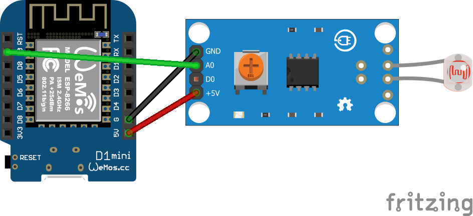
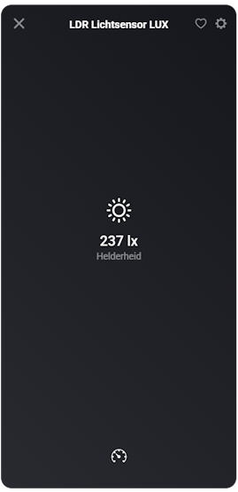
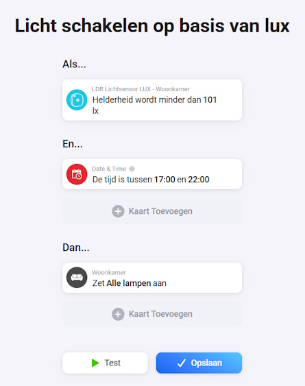

Een slim huis wordt pas echt slim wanneer het weet of het daadwerkelijk donker genoeg is om iets te doen. Juist daar komt een LDR lichtsensor goed van pas. Met zo'n simpele sensor geef je Homey extra context, zodat lampen en flows niet alleen op tijd of aanwezigheid reageren, maar ook op de hoeveelheid licht in een ruimte.
Waarom een LDR sensor / lichtsensorzo handig is
De kracht van een LDR project zit in de eenvoud. Je meet geen complete klimaatset of ingewikkelde luchtkwaliteit, maar één waarde waar je in de praktijk verrassend veel aan hebt: lichtsterkte. Daarmee voorkom je bijvoorbeeld dat lampen midden op de dag onnodig aangaan of dat een flow start terwijl er nog genoeg daglicht binnenkomt.
Juist die eenvoud maakt dit project ook zo aantrekkelijk. Met weinig onderdelen bouw je een sensor die direct bruikbaar is in Homey en die prima past als instapproject voor wie met Homeyduino aan de slag wil.
Benodigdheden
- Wemos D1 Mini of NodeMCU met wifi
- LDR of vergelijkbare lichtsensor
- Homey met Homeyduino
- Arduino IDE
- USB-voeding voor de Wemos D1 Mini
Handige links bij dit project
Dit zijn producten die aansluiten op de benodigdheden in dit artikel.
Stap-voor-stap uitleg
1. Sluit de LDR-module aan op je board
Bij deze aanpak gebruik je de analoge uitgang van de module. Daarmee kun je via Homey de exacte lichtwaarde lezen en op basis daarvan acties, zoals licht in of uitschakelen uitvoeren. Daarna sluit je de module als volgt aan op je NodeMCU of vergelijkbaar ESP8266-board.
- VCC van de module → 3V of VIN
- GND van de module → G of GND
- AO (Analog Out) → AO

2. Bereid Arduino IDE voor
Zorg dat je ESP8266-board correct is ingesteld in Arduino IDE en selecteer het juiste board voordat je gaat uploaden. Voor dit project is het handig om de Seriële Monitor later op 115200 baud te openen, zodat je direct kunt zien wanneer de sensor omschakelt van licht naar donker of andersom.
3. Upload de Homeyduino code
Software en koppeling
In deze versie draait het volledig om de capability measure_luminance. De LDR wordt via de analoge ingang uitgelezen, gefilterd met een eenvoudige gemiddelde-berekening en alleen naar Homey gestuurd wanneer de waarde voldoende verandert of wanneer een heartbeat nodig is. Dat zorgt voor een rustiger en netter geheel in Homey.
// Code for Homeyduino made by Smart Home Blog https://huisvanvandaag.nl
// Improved version with current architecture standard, preserving measure_luminance.
#include <ESP8266WiFi.h>
#include <Homey.h>
// =========================
// Debug instellingen
// =========================
#define DEBUG 0 // 1 = debug aan, 0 = debug uit
#if DEBUG
#define DBG_PRINT(x) Serial.print(x)
#define DBG_PRINTLN(x) Serial.println(x)
#else
#define DBG_PRINT(x)
#define DBG_PRINTLN(x)
#endif
// =========================
// Configuratie
// =========================
namespace Config {
constexpr const char* WIFI_SSID = "SSID";
constexpr const char* WIFI_PASSWORD = "PASSWORD";
constexpr uint8_t LDR_PIN = A0;
constexpr unsigned long WIFI_CHECK_INTERVAL_MS = 60000;
constexpr unsigned long WIFI_CONNECT_TIMEOUT_MS = 30000;
constexpr unsigned long SENSOR_SAMPLE_INTERVAL_MS = 1000;
constexpr unsigned long HOMEY_HEARTBEAT_INTERVAL_MS = 60000;
// Alleen publiceren als de waarde voldoende wijzigt
constexpr int LUMINANCE_PUBLISH_THRESHOLD = 10;
// Filtering: 0.05 = rustig, 0.3 = sneller
constexpr float EMA_ALPHA = 0.15f;
constexpr const char* HOMEY_DEVICE_NAME = "LDR Lichtsensor LUX";
constexpr const char* HOMEY_DEVICE_CLASS = "sensor";
constexpr const char* CAPABILITY_LUMINANCE = "measure_luminance";
}
// =========================
// State
// =========================
struct LuminanceState {
int rawValue = 0;
float filteredValue = 0.0f;
bool hasReading = false;
int currentLuminance = 0;
int lastPublishedLuminance = 0;
bool hasPublished = false;
bool dirty = false;
unsigned long lastSampleAt = 0;
unsigned long lastPublishAt = 0;
};
struct WifiState {
unsigned long lastCheckAt = 0;
bool wasConnected = false;
bool reconnectedEvent = false;
};
LuminanceState luminanceState;
WifiState wifiState;
// =========================
// Functiedeclaraties
// =========================
void connectToWifiWithTimeout();
void maintainWifi(unsigned long currentMillis);
bool canPublishToHomey();
void initializeHomey();
void processLuminanceSensor(unsigned long currentMillis);
int readRawLuminance();
void updateFilteredLuminance(int rawValue);
void markLatestLuminance();
bool shouldPublishLuminance(unsigned long currentMillis);
void publishLatestLuminanceToHomey(unsigned long currentMillis);
void syncLuminanceIfDirty(unsigned long currentMillis);
// =========================
// Setup
// =========================
void setup() {
Serial.begin(115200);
Serial.println();
Serial.println(F("--- LDR Luminance Sensor Gestart ---"));
connectToWifiWithTimeout();
initializeHomey();
// Zorg dat eerste sample direct kan plaatsvinden
luminanceState.lastSampleAt = millis() - Config::SENSOR_SAMPLE_INTERVAL_MS;
}
// =========================
// Main loop
// =========================
void loop() {
Homey.loop();
yield();
const unsigned long currentMillis = millis();
maintainWifi(currentMillis);
if (wifiState.reconnectedEvent) {
wifiState.reconnectedEvent = false;
syncLuminanceIfDirty(currentMillis);
}
processLuminanceSensor(currentMillis);
}
// =========================
// WiFi
// =========================
void connectToWifiWithTimeout() {
WiFi.mode(WIFI_STA);
WiFi.begin(Config::WIFI_SSID, Config::WIFI_PASSWORD);
Serial.print(F("Verbinden met WiFi..."));
const unsigned long startAttemptTime = millis();
while (WiFi.status() != WL_CONNECTED &&
millis() - startAttemptTime < Config::WIFI_CONNECT_TIMEOUT_MS) {
delay(500);
Serial.print(F("."));
}
Serial.println();
if (WiFi.status() == WL_CONNECTED) {
Serial.print(F("[SUCCES] Verbonden! IP-adres: "));
Serial.println(WiFi.localIP());
wifiState.wasConnected = true;
} else {
Serial.println(F("[WIFI] Timeout bereikt. Sensor start zonder wifi."));
wifiState.wasConnected = false;
}
}
void maintainWifi(unsigned long currentMillis) {
if (currentMillis - wifiState.lastCheckAt < Config::WIFI_CHECK_INTERVAL_MS) {
return;
}
wifiState.lastCheckAt = currentMillis;
wifiState.reconnectedEvent = false;
DBG_PRINT(F("[DEBUG] WiFi status: "));
DBG_PRINT(WiFi.status());
DBG_PRINT(F(" | IP: "));
DBG_PRINTLN(WiFi.localIP());
const wl_status_t status = WiFi.status();
if (status == WL_CONNECTED) {
if (!wifiState.wasConnected) {
Serial.print(F("[WIFI] Opnieuw verbonden! IP-adres: "));
Serial.println(WiFi.localIP());
wifiState.wasConnected = true;
wifiState.reconnectedEvent = true;
}
return;
}
if (wifiState.wasConnected) {
Serial.println(F("[WIFI] Verbinding kwijt. Herstellen..."));
wifiState.wasConnected = false;
} else {
Serial.println(F("[WIFI] Nog niet verbonden. Nieuwe poging..."));
}
WiFi.begin(Config::WIFI_SSID, Config::WIFI_PASSWORD);
}
bool canPublishToHomey() {
return WiFi.status() == WL_CONNECTED;
}
// =========================
// Homey
// =========================
void initializeHomey() {
Homey.begin(Config::HOMEY_DEVICE_NAME);
Homey.setClass(Config::HOMEY_DEVICE_CLASS);
Homey.addCapability(Config::CAPABILITY_LUMINANCE);
}
// =========================
// Sensorlogica
// =========================
void processLuminanceSensor(unsigned long currentMillis) {
if (currentMillis - luminanceState.lastSampleAt < Config::SENSOR_SAMPLE_INTERVAL_MS) {
return;
}
luminanceState.lastSampleAt = currentMillis;
const int rawValue = readRawLuminance();
updateFilteredLuminance(rawValue);
markLatestLuminance();
DBG_PRINT(F("[DEBUG] LDR raw="));
DBG_PRINT(luminanceState.rawValue);
DBG_PRINT(F(" | filtered="));
DBG_PRINTLN(luminanceState.currentLuminance);
if (shouldPublishLuminance(currentMillis)) {
publishLatestLuminanceToHomey(currentMillis);
}
}
int readRawLuminance() {
return analogRead(Config::LDR_PIN);
}
void updateFilteredLuminance(int rawValue) {
luminanceState.rawValue = rawValue;
if (!luminanceState.hasReading) {
luminanceState.filteredValue = static_cast<float>(rawValue);
luminanceState.hasReading = true;
return;
}
luminanceState.filteredValue =
(Config::EMA_ALPHA * rawValue) +
((1.0f - Config::EMA_ALPHA) * luminanceState.filteredValue);
}
void markLatestLuminance() {
luminanceState.currentLuminance = static_cast<int>(luminanceState.filteredValue);
if (!luminanceState.hasPublished) {
luminanceState.dirty = true;
return;
}
luminanceState.dirty =
abs(luminanceState.currentLuminance - luminanceState.lastPublishedLuminance) >=
Config::LUMINANCE_PUBLISH_THRESHOLD;
}
bool shouldPublishLuminance(unsigned long currentMillis) {
if (!luminanceState.hasReading) {
return false;
}
const bool heartbeatReached =
(currentMillis - luminanceState.lastPublishAt) >= Config::HOMEY_HEARTBEAT_INTERVAL_MS;
return luminanceState.dirty || heartbeatReached;
}
void publishLatestLuminanceToHomey(unsigned long currentMillis) {
if (!luminanceState.hasReading) {
return;
}
if (!canPublishToHomey()) {
luminanceState.dirty = true;
Serial.println(F("[WAARSCHUWING] Laatste luminance lokaal bewaard (Geen WiFi)."));
return;
}
Homey.setCapabilityValue(
Config::CAPABILITY_LUMINANCE,
static_cast<float>(luminanceState.currentLuminance));
luminanceState.lastPublishedLuminance = luminanceState.currentLuminance;
luminanceState.lastPublishAt = currentMillis;
luminanceState.hasPublished = true;
luminanceState.dirty = false;
Serial.println(F("[HOMEY] Luminance succesvol bijgewerkt."));
}
void syncLuminanceIfDirty(unsigned long currentMillis) {
if (!luminanceState.dirty) {
return;
}
Serial.println(F("[HOMEY] Laatste luminance synchroniseren..."));
publishLatestLuminanceToHomey(currentMillis);
}4. Test de metingen
Open na het uploaden de Seriële Monitor. Let goed op dat deze sketch op 115200 baud draait en dus niet op 9600. Daar kun je meteen controleren of de wifi netjes verbindt en of de metingen goed binnenkomen. Wil je extra informatie zien, zet DEBUG dan tijdelijk op 1.
5. Koppel de sensor aan Homey
Voeg de sensor daarna toe via Homeyduino. Zodra de koppeling gelukt is, zie je in Homey de capabilitie helderheid in lx.

Integratie met Homey
De koppeling met Homey doet hier meer dan alleen wat cijfers tonen. De code registreert de capabilitie en probeert gemiste updates opnieuw te synchroniseren zodra de wifi terugkomt. Dat maakt deze sensor ook in dagelijks gebruik een stuk bruikbaarder.
In de praktijk kun je deze metingen bijvoorbeeld inzetten als:
- een lichtwaarde als extra voorwaarde voor andere slimme flows

Praktisch gebruik
Deze sensor komt vooral tot zijn recht in ruimtes waar je langere tijd verblijft, zoals de woonkamer, slaapkamer of thuiswerkplek. Juist daar levert de combinatie van CO₂, temperatuur en luchtvochtigheid vaak meteen bruikbare inzichten op.
Je bouwt hiermee geen overvolle multisensor, maar juist een overzichtelijke en praktische lichtsensor die zich volledig richt op één taak: meten hoe licht of donker het is en die informatie netjes doorgeven aan Homey.
Voorbeelden van flows
- Laat hal- of buitenverlichting alleen aangaan als het daadwerkelijk donker genoeg is.
- Gebruik de lichtwaarde als extra voorwaarde bij bewegingssensoren, zodat lampen overdag uit blijven.
- Start een avondroutine pas wanneer de gemeten lichtsterkte onder een bepaalde grens komt.
Conclusie
Met een LDR en een Wemos D1 Mini bouw je voor weinig geld een verrassend bruikbare sensor. Juist omdat lichtsterkte zo'n praktische rol speelt in slimme automatiseringen, is dit project een mooie en toegankelijke basis voor een slimmer huis. Simpel, betaalbaar en direct inzetbaar: precies het soort DIY-project waar Homeyduino sterk in is.